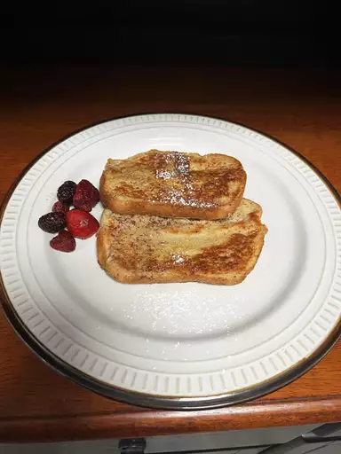

Kometro's sweet and fabulous French Toast

These sugary Toasts, if eaten as a dessert, provide a great contrast to the other more hearty recipes on my site, but can also be enjoyed for f.e. breakfast.
The ingredients you'll need
- 2/3 cup milk
- 2 large eggs
- 1 tsp vanilla extract
- 1/4 tsp ground cinnamon
- salt to taste
- 6 thick slices bread
- 1 tbsp unsalted butter (add more if needed)
Making the french toast
- whisk milk, eggs, vanilla, cinnamon, and salt together in a bowl
- put butter in a pan and heat it over medium heat
- put the toast in the mixture and soak both sides with it
- cook the toast in the pan until each side is golden (about 3-4 minutes per side)
Now you are ready to serve your delicous french toast!You could also add f.e. some syrup or strawberries.